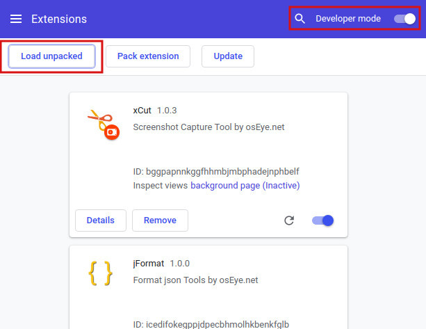

Quick Start
Online Install
xCut can work with Chrome or Chromium web browser. you can install it on the google web store by the link:Online Install.
Offline Install
- You also can click the link to download the zip and install it offline
- Unzip the pakcage to whatever you like.
- Open the Extension Management page by navigating to chrome://extensions.
The Extension Management page can also be opened by clicking on the Chrome menu, hovering over More Tools then selecting Extensions.
- Enable Developer Mode by clicking the toggle switch next to Developer mode.
- Click the LOAD UNPACKED button and select the extension directory which you unziped.

Ta-da! The extension has been successfully installed. Because no icons were included in the manifest, a generic toolbar icon will be created for the extension.